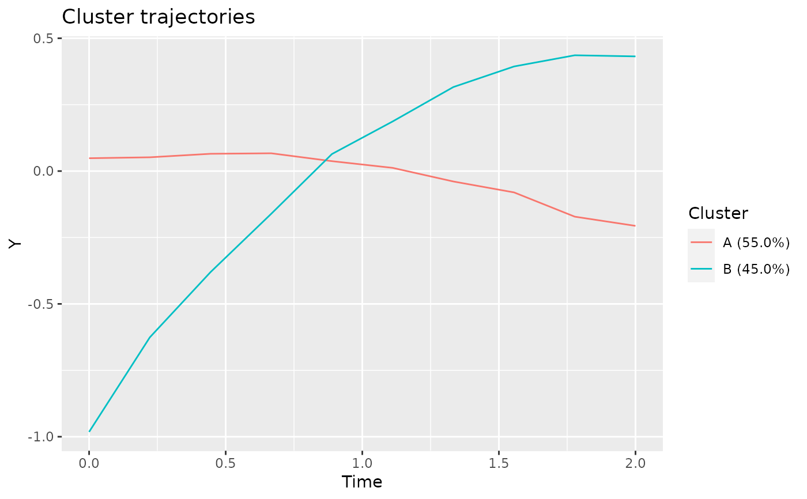

R/generics.R, R/trajectories.R, R/model.R
plotClusterTrajectories.RdPlot the cluster trajectories associated with the given model.
plotClusterTrajectories(object, ...)
# S4 method for data.frame
plotClusterTrajectories(
object,
response,
cluster = "Cluster",
clusterOrder = character(),
clusterLabeler = make.clusterPropLabels,
time = getOption("latrend.time"),
center = meanNA,
trajectories = c(FALSE, "sd", "se", "80pct", "90pct", "95pct", "range"),
facet = !isFALSE(as.logical(trajectories[1])),
id = getOption("latrend.id"),
...
)
# S4 method for lcModel
plotClusterTrajectories(
object,
what = "mu",
at = time(object),
clusterOrder = character(),
clusterLabeler = make.clusterPropLabels,
trajectories = FALSE,
facet = !isFALSE(as.logical(trajectories[1])),
trajAssignments = trajectoryAssignments(object),
...
)The (cluster) trajectory data.
Arguments passed on to clusterTrajectories
The response variable name, see responseVariable.
The cluster assignment column
Specify which clusters to plot and the order. Can be the cluster names or index. By default, all clusters are shown.
A function(clusterNames, clusterSizes) that generates plot labels for the clusters.
By default the cluster name with the proportional size is shown, see make.clusterPropLabels.
The time variable name, see timeVariable.
A function for aggregating multiple points at the same point in time
Whether to additionally plot the original trajectories (TRUE),
or to show the expected interval (standard deviation, standard error, range, or percentile range)
of the observations at the respective moment in time.
Note that visualizing the expected intervals is currently only supported for time-aligned trajectories,
as the interval is computed at each unique moment in time.
By default (FALSE), no information on the underlying trajectories is shown.
Whether to facet by cluster. This is done by default when trajectories is enabled.
Id column. Only needed when trajectories = TRUE.
The distributional parameter to predict. By default, the mean response 'mu' is predicted. The cluster membership predictions can be obtained by specifying what = 'mb'.
A numeric vector of the times at which to compute the cluster trajectories.
The cluster assignments for the fitted trajectories. Only used when trajectories = TRUE and facet = TRUE. See trajectoryAssignments.
A ggplot object.
Other lcModel functions:
clusterNames(),
clusterProportions(),
clusterSizes(),
clusterTrajectories(),
coef.lcModel(),
converged(),
deviance.lcModel(),
df.residual.lcModel(),
estimationTime(),
externalMetric(),
fitted.lcModel(),
fittedTrajectories(),
getCall.lcModel(),
getLcMethod(),
ids(),
lcModel-class,
metric(),
model.frame.lcModel(),
nClusters(),
nIds(),
nobs.lcModel(),
plot-lcModel-method,
plotFittedTrajectories(),
postprob(),
predict.lcModel(),
predictAssignments(),
predictForCluster(),
predictPostprob(),
qqPlot(),
residuals.lcModel(),
sigma.lcModel(),
strip(),
time.lcModel(),
trajectoryAssignments()
data(latrendData)
method <- lcMethodLMKM(Y ~ Time, id = "Id", time = "Time")
model <- latrend(method, latrendData, nClusters = 3)
if (require("ggplot2")) {
plotClusterTrajectories(model)
# show cluster sizes in labels
plotClusterTrajectories(model, clusterLabeler = make.clusterSizeLabels)
# change cluster order
plotClusterTrajectories(model, clusterOrder = c('B', 'C', 'A'))
# sort clusters by decreasing size
plotClusterTrajectories(model, clusterOrder = order(-clusterSizes(model)))
# show only specific clusters
plotClusterTrajectories(model, clusterOrder = c('B', 'C'))
# show assigned trajectories
plotClusterTrajectories(model, trajectories = TRUE)
# show 95th percentile observation interval
plotClusterTrajectories(model, trajectories = "95pct")
# show observation standard deviation
plotClusterTrajectories(model, trajectories = "sd")
# show observation standard error
plotClusterTrajectories(model, trajectories = "se")
# show observation range
plotClusterTrajectories(model, trajectories = "range")
}
